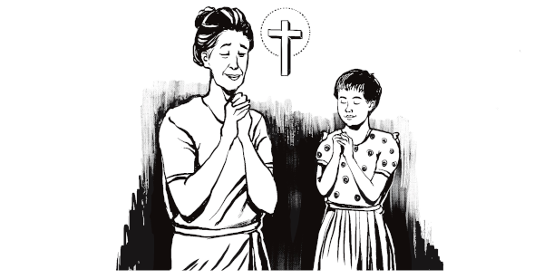
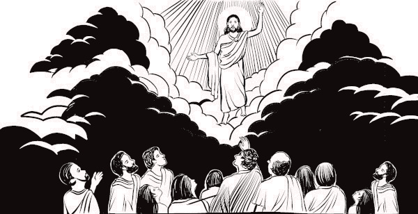

| A PRAYER OF FAITH |
TUG NTSEEG ZAAJ LUG THOV |
| (Prayer is talking with God.) |
(Kev thov Vaajtswv yog nrug Vaajtswv sis thaam)
|
|
God knows what you want to say and if you truly mean it.
|
Vaajtswv yeej paub tej kws koj xaav has hab saib koj puas has tseeb tag.
|

|
|
On the cross He took the punishment for our sins.
|
Sau tug ntoo khaublig, Nwg tau raug txim rua peb cov kev txhum.
|
|
| HE ROSE FROM THE DEAD |
NWG TAU SAWV HUV QHOV TUAG ROV LUG
|
|
“Jesus Christ died for our sins… He was buried……He was raised to life on
the third day just as He told His followers he would be …
|
“Yexu Kheto tuag rua peb cov kev txhum…Nwg tau muab log…Nub peb Nwg tau
sawv rov lug muaj sa nyob ib yaam le Nwg tau qha rua Nwg cov thwjtim
hastas Nwg yuav ua le ntawd…
|
|
|
…He appeared to Peter and then to all the twelve disciples. Then He
appeared to more than five hundred of His followers at one time." I
Corinthians 15:3-6
|
“…Nwg tshwm rua Petu hab tom qaab rua taagnrho kaum ob tug thwjtim. Ces
Nwg tshwm rua ntau tshaaj le kws tsib puas leej cov kws lawv Nwg qaab ua
ib zag.” 1 Kauleethau 15:3-6
|

|
| HE IS THE ONLY WAY |
NWG YOG TUAB TXUJKEV XWB |
|
Jesus Christ said: "I am the Way, I am the Truth, I am the Life. No man
goes to God except by me." John 14:6
|
Yexu Kheto hastas, “Kuv yog Txujkev, Kuv yog Qhovtseeb, Kuv yog Txujsa.
Yeej tsi muaj leejtwg moog cuag tau Leejtxiv tsuas yog lug ntawm Kuv
xwb.” Yauhaa 14:6
|
|
God put a bridge over the great deep valley that keeps us away from Him
when He sent His Son, Jesus Christ, to die on the cross in our place.
|
Vaajtswv tau tuam ib tug choj rua lub kwjhaa luj hab tub kws cais peb
tawm ntawm Vaajtswv thaum Nwg khaiv Nwg tug Tub, Yexu Kheto, lug tuag
rua sau tug ntoo khaublig nyob peb lub chaw.
|
|
|
It is not enough to know these three things ...
|
Paub peb yaam le nuav xwb tseem tsi tau zoo txaus…
|